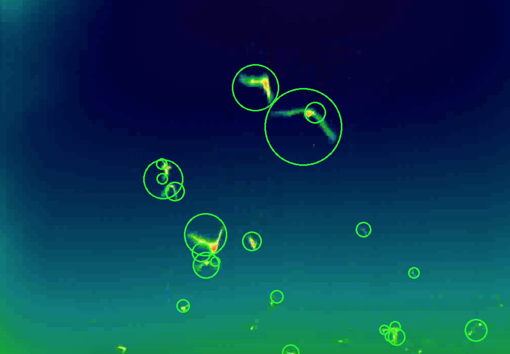
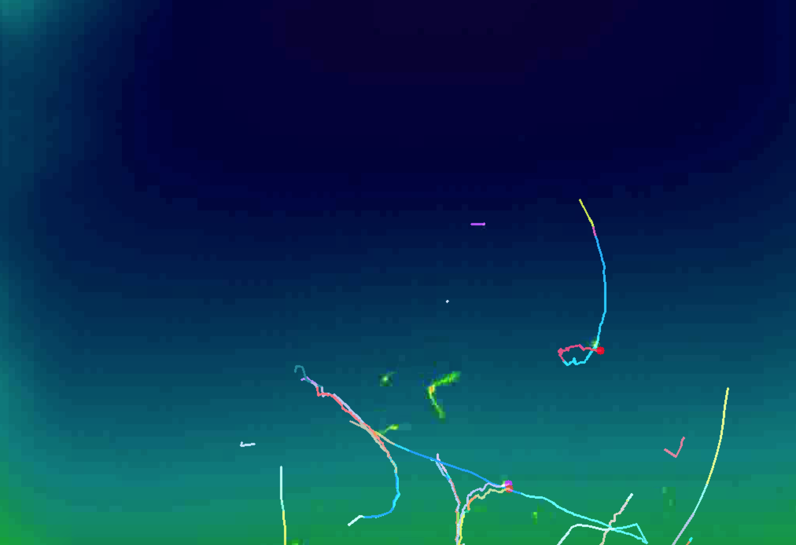
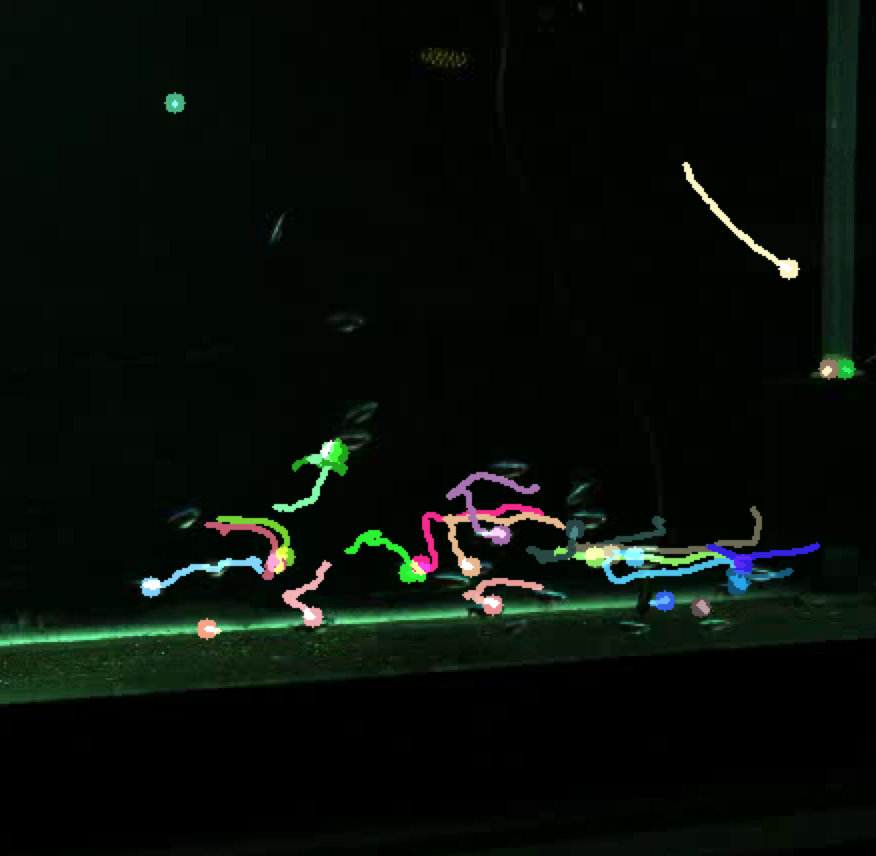
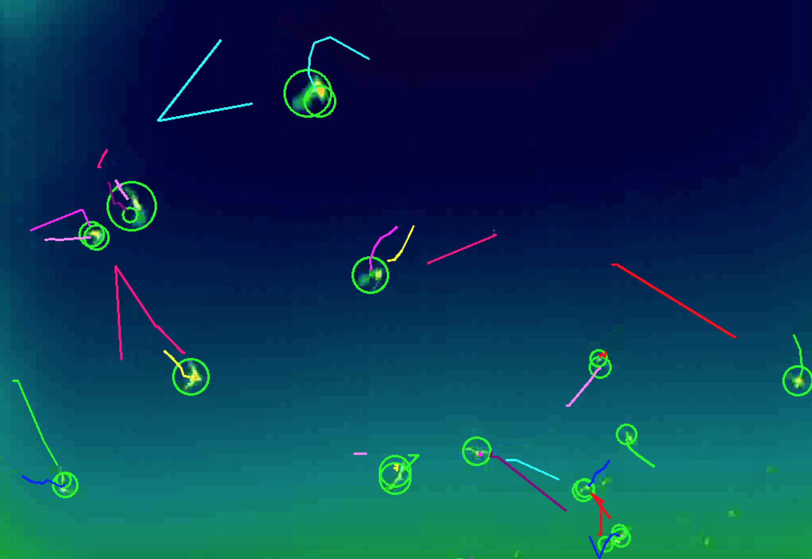

Tracking images of bats and fish using optical flow and kalman filter. This problem is known as multi-object tracking
I have used OpenCV 3.3.0 and Python 3.6.2 as well as OpenCV2.4 for Python 2.7. I have used Tomas-Shi corner detection for optical flow and I have used both sparse and dense optical flow. I have investigated Kalman Filter
From the results it can be understood that optical flow works really well on the fish dataset and not very well on the bat dataset. For the bat dataset kalman filter works really great. Here are some images from the results:
|  |  | |
|  |  |